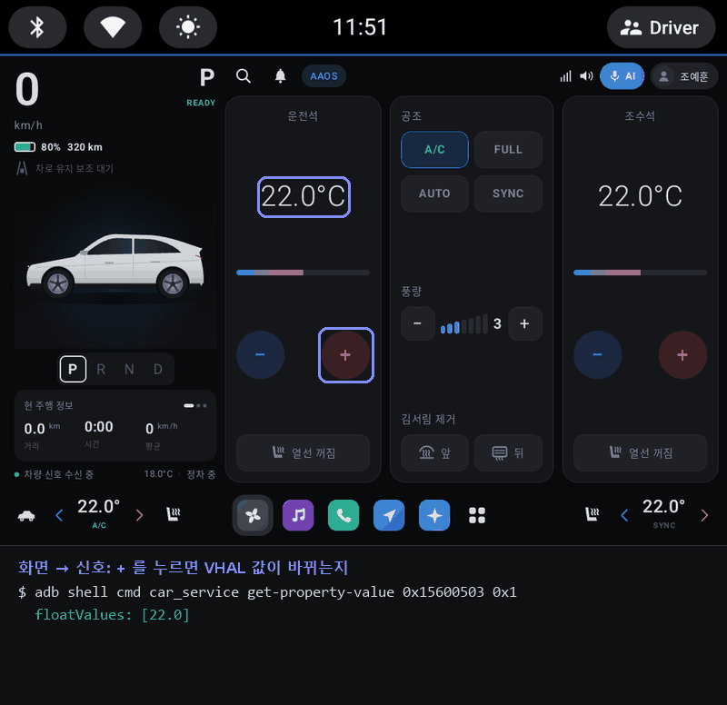
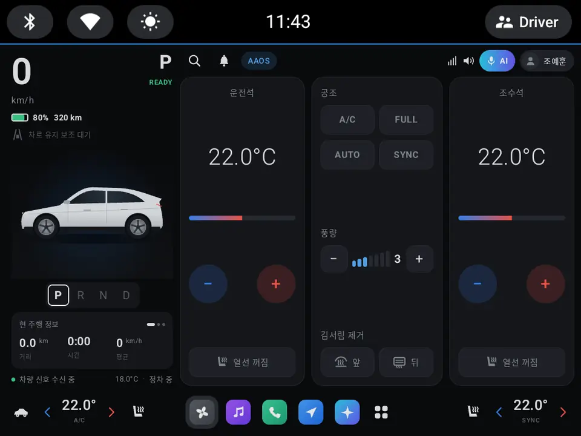
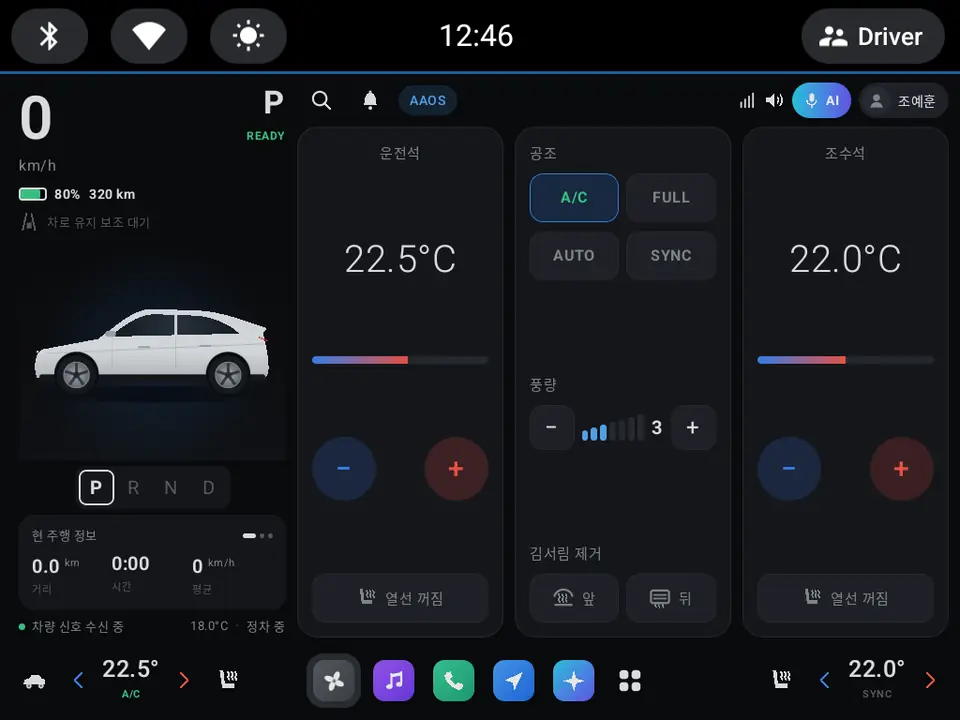
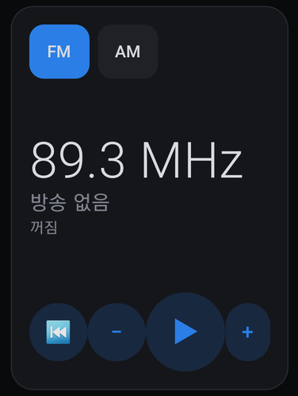
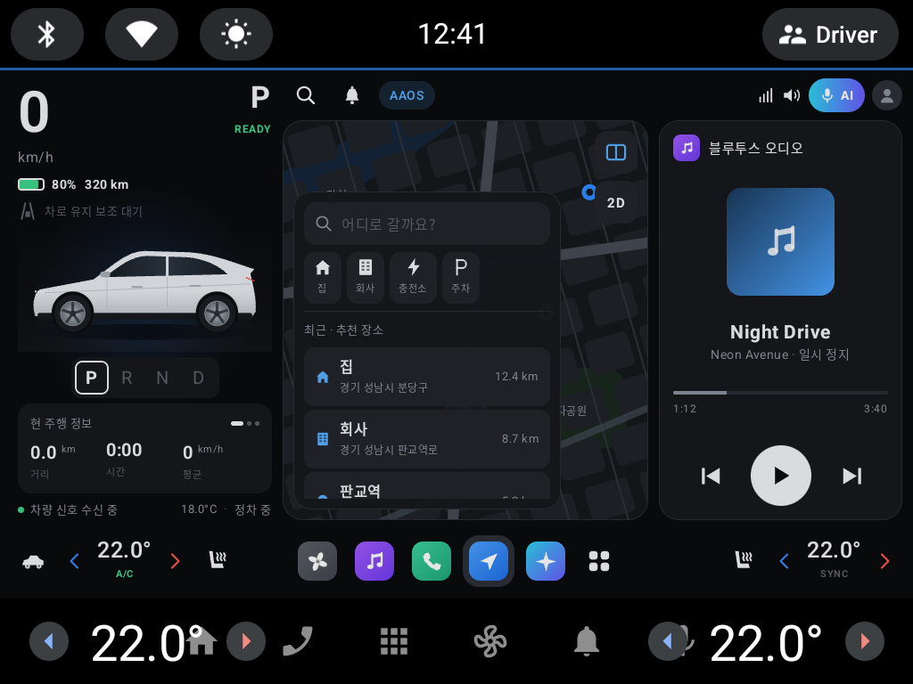
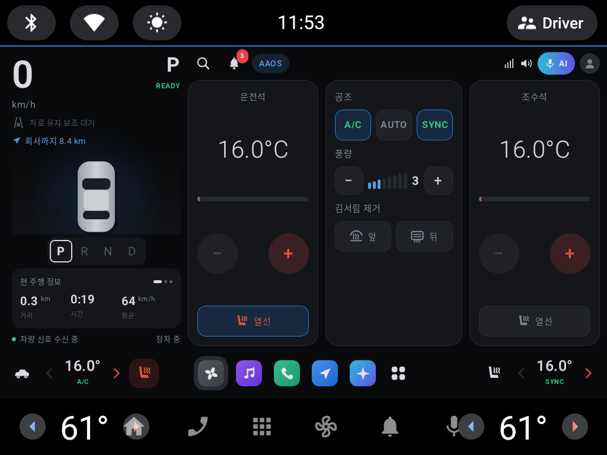
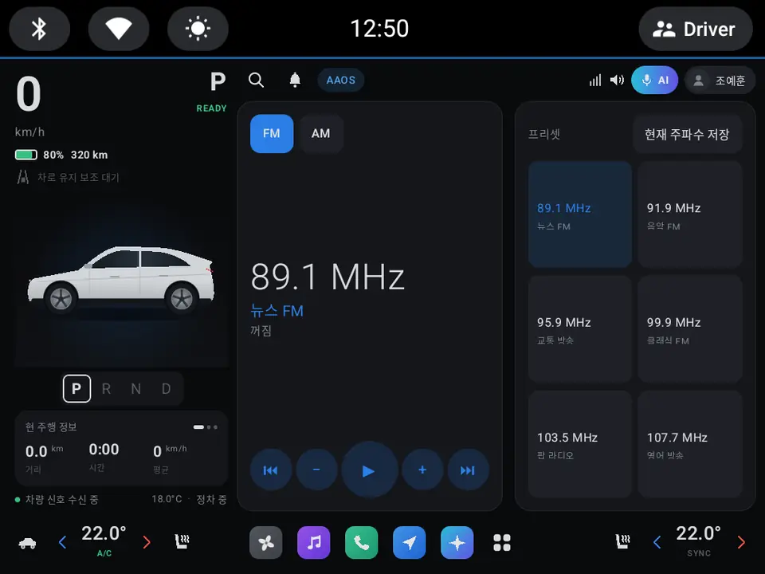
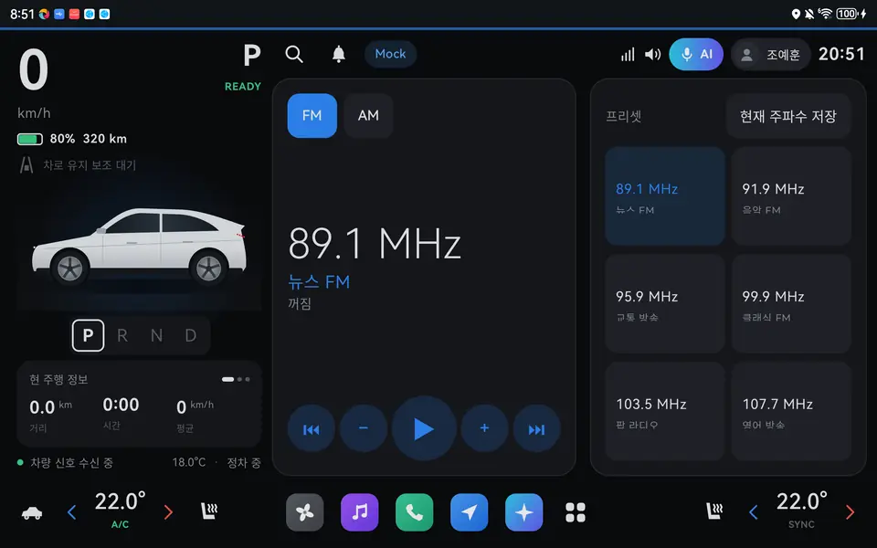

화면만 확인할 때
예시- 화면의 A/C 버튼이 '꺼짐'으로 바뀝니다
- 좌석별 차량 값은 보지 않습니다
판정: 통과결함을 놓칩니다
문제 정의
A/C를 끄면 화면의 버튼은 '꺼짐'으로 바뀝니다.
그런데 앱이 운전석 값만 끄면 나머지 좌석은 계속 켜져 있습니다.
화면만 보는 UI 테스트는 이 경우도 통과로 판정합니다.
그래서 이 프로젝트의 E2E 테스트는 화면과 차량 신호(VHAL)를 따로 읽어 둘 다 맞아야 통과로 봅니다.
좌석과 문처럼 위치가 여러 곳인 신호는 위치마다 확인합니다.
해결 방향
실차도, 차량용 헤드 유닛도 없었습니다.
그래서 테스트할 IVI 앱부터 테스트 도구까지 Claude Code로 만들고,
같은 테스트를 AAOS 에뮬레이터와 실제 태블릿 두 곳에서 돌렸습니다.
공조, 도어, 주행 정보, 미디어 화면이 있는 가상 IVI 앱입니다.
차량 신호 12종을 에뮬레이터에서는 CarService로,
태블릿에서는 앱 안의 Mock으로 주고받습니다.
화면은 Appium으로, 차량 값은 adb 명령으로 넣고 읽습니다.
E2E 테스트 150개를 smoke, sanity, regression으로 나눴습니다.
두 기기 병렬 실행, 실패 자료 저장, 재시도 통계,
릴리스 판정, 테스트별 결과 페이지를 붙였습니다.

문제 해결 과정
테스트를 돌려 보면서 생긴 문제를 하나씩 도구의 기능으로 풀었습니다.
PR을 올릴 때
smoke 13개
main에 합칠 때
+ sanity 25개
매일 밤
전체 150개
릴리스 후보
150개 × 3회
GitHub에서 자동으로 도는 E2E는 PR, main, 매일 밤의 AAOS smoke 13개입니다.
태블릿과 sanity 이상은 같은 명령을 작업 PC에서 돌렸습니다.
결함 분석
앱 결함만 있지 않았습니다.
기기, 플랫폼, 테스트 코드 쪽 문제도 같은 양식으로 GitHub 이슈에 남겼습니다.
버튼이 '지금 값 + 0.5'로 계산했습니다.
0.5°C 단위에 맞춘 다음 값으로
계산하게 고쳤습니다.
경계값 E2E 6개를 더했고, 두 기기에서 통과했습니다.
Appium의 누르는 방법 세 가지가
모두 10초였습니다.
요소는 Appium으로 찾고,
누르는 동작만 adb로 바꿨습니다.
전체 실행이 7분 22초에서 1분 32초로 줄었습니다.
Force stopping dev.opencabin.ivi … iAwareF[CrashClean]
테스트마다 앱을 껐다 켜자 화웨이 OS가
반복되는 크래시로 보고 앱을 강제 종료했습니다.
앱은 켜 둔 채 화면만 처음으로 돌리게 바꿨습니다.
3회 연속 실행에서 앱을 다시 띄운 적이 없었습니다.
검증 결과
2026년 11월 24일, 앱(0.4.2)과 테스트 150개를 같은 코드로 두 기기에서 세 번 돌린 결과입니다.
재시도로 통과한 테스트도 없었습니다. 아래는 마지막 회차입니다.
13분 1초3회차
13분 35초3회차

A/C를 끄면 다섯 좌석 신호가 모두 꺼지는지 봅니다
22.3°C에서 + 를 누르면 22.5°C가 되는지 봅니다 주행 가능 거리가 부족하면 충전소 안내로 이어지는지 봅니다
주행 가능 거리가 부족하면 충전소 안내로 이어지는지 봅니다
알려진 결함 1건은 에뮬레이터 기본 화면(SystemUI)에서 운전석 온도 ▲ 버튼이 홈 버튼에 가려 눌리지 않는 문제입니다.
앱에서 고칠 수 없는 플랫폼 쪽 문제라 '알려진 결함'으로 표시해 두었고, 고쳐지면 바로 알 수 있게 했습니다.
원자료가 남은 E2E 실행을 모두 합치면 (11-18~11-24, 첫 시도와 확인용 실행 포함)
전체 실행 기록같은 테스트 129개를 접는 폰에서 돌리자 5개가 실패했습니다.
화면이 좁고 낮아(앱 영역 약 780×513dp) 라디오의 ⏭ 버튼이 패널 밖으로 밀렸고,
아래 바의 열선 버튼이 가려졌습니다.
앱은 가로 전용으로 정하고 좁은 화면용 배치를 더했습니다.
테스트도 거의 가려진 버튼은 누르지 않고 실패로 남기게 고쳤습니다.
같은 APK로 태블릿과 에뮬레이터도 다시 돌려 모두 Release 게이트를 통과했습니다.


역할
AI가 "통과했다", "고쳤다"고 해도 그 말만으로 받아들이지 않았습니다.
기기 실행 결과 파일과 자동 검사로 확인했고,
앱은 태블릿과 에뮬레이터에서 직접 써 보며 고칠 곳을 찾았습니다.
Claude의 추천과 다르게 정한 것도 아래에 모았습니다.
함께
E2E 테스트 설계




11-14에뮬레이터 공조 화면


공조 온도가 태블릿과 달리 화씨 61°로 보였습니다
섭씨 22.0°C로 맞추고, 화씨를 가정하던 테스트 4개를 고쳤습니다
11-16공조 화면


최대 냉방(FULL) 기능이 없었습니다
FULL 기능과 E2E 테스트 4개를 더했습니다
11-16에뮬레이터
고쳤던 온도가 재부팅 뒤 다시 63°로 돌아왔습니다
초기값부터 바꿔 재부팅 뒤에도 유지되게 했습니다
11-18공고 우대사항
차량 네트워크, 원격 전원, 기능 안전 항목이 비어 있었습니다
모의 Test Bench API, 원격 전원, 가상 CAN, 요구사항 추적표를 더했습니다
11-23앱이 지원할 가장 작은 화면


Claude 추천세로 화면까지 지원(폭 580dp)
가로 전용으로 범위를 좁혔고, 760×500dp에서 앱 테스트가 모두 통과했습니다
11-23태블릿 배치 확인


Claude 추천화면 폭이 같으니 에뮬레이터로 대신 확인
실제 태블릿을 연결해, 같은 APK로 122개 통과를 확인했습니다
11-23결과 페이지의 갤럭시 폴드

Claude 추천폴드는 칸 없이 사례로만 보여 주기
결과 도구를 고쳐 세 기기의 화면을 나란히 비교하게 했습니다
11-23첫 화면 숫자
Claude 추천테스트가 늘어도 헤드라인은 이전 결과로 유지
140개 × 3회를 다시 돌려 813건 실패 0으로 바꿨습니다
11-21역할 문구
Claude 초안'Test Bench에서 E2E를 직접 돌려 확인'
하지 않은 일이라 README, 포트폴리오, 사이트에서 뺐습니다
만든 사람
게임 QA로 일하면서 필요한 테스트 도구를 AI 코딩으로 만들어 써 왔고,
이번에는 그 방식을 차량 IVI로 넓혔습니다.
2017.12~
약 7년 10개월
4곳
게임 회사
CTFL
ISTQB 자격

개인 포트폴리오로 바이브 코딩(코드는 AI가 작성)으로 만들었습니다.
게임 QA에서 쓰던 BVT 문서 양식으로 엑셀 BVT 문서를 관리하고,
Playwright로 공개 웹 서비스(타입캐스트)의 BVT 70개 중 47개를
한 번에 약 6분에 돌립니다. 실패하면 화면, 녹화, 메시지를 남깁니다.

업무에 쓰는 TC 관리 도구 Bugspeaker Zone에
이 프로젝트의 결과 파일을 읽어 들이는 화면을 붙였습니다.
TC마다 두 기기의 판정과 판정 직후 화면, 차량 값을 보고,
요구사항 추적과 회차별 flaky 통계도 봅니다.
한계와 다음 단계